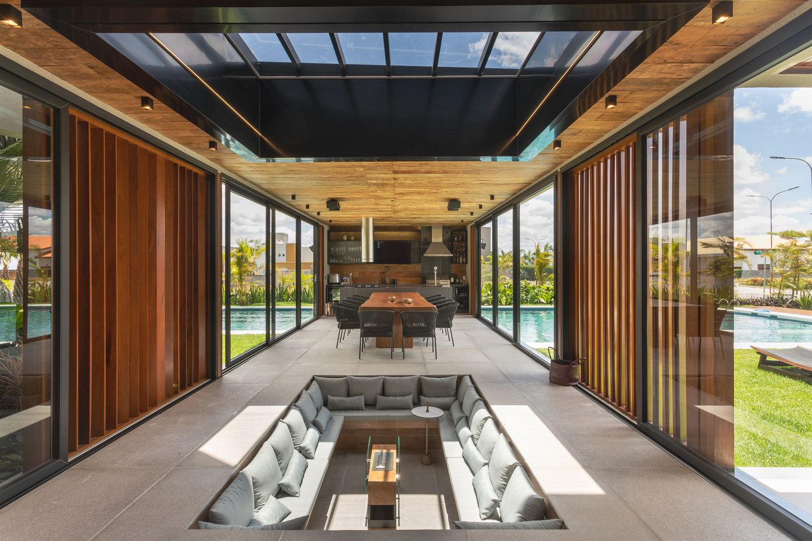

Janelas de correr
O modelo mais pedido em reforma: pouca alvenaria, muita luz.
Conheça a solução
Tipologias: 2 ou 4 folhas, com trilho embutido ou de sobrepor.
Vidro: simples, duplo (mais isolamento acústico) ou laminado (mais segurança).
Cores: branco, preto, cinza e linha amadeirada.